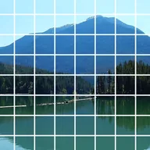

Grade

Desenha linhas de grade sobre as partes opacas da camada ou as recorta.
Configurações
| Configuração | Tipo | Intervalo | Padrão |
|---|---|---|---|
| Deslocamento | Ponto (X, Y) | -5000 px a 5000 px | 0 px, 0 px |
| Quantidade | Número | 0.5 a 200 | 10 |
| Alongamento | Ponto (X, Y) | 0.01 a 10 | 1, 1 |
| Largura | Número | 0 a 1 | 0.1 |
| Cor | Cor | – | #FFFFFF |
| Recortar | Ativado ou desativado | – | Desativado |
| Ângulo | Ângulo | -3600° a 3600° | 0° |